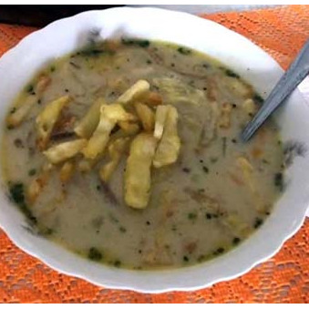
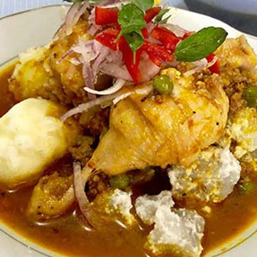
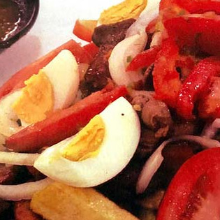
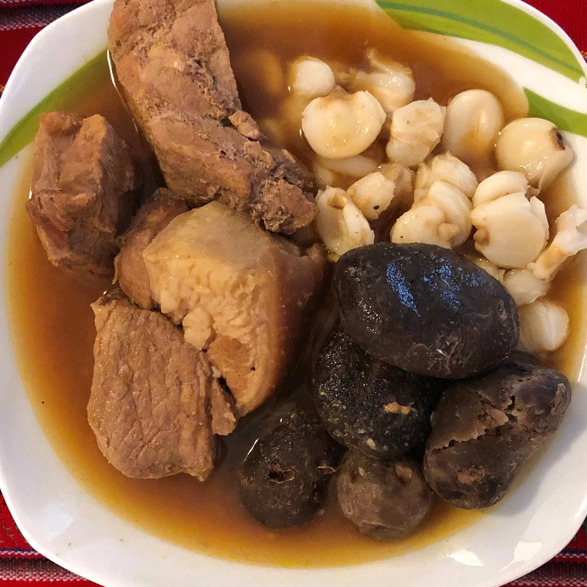
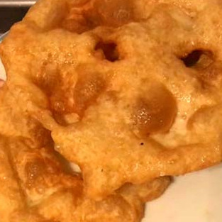
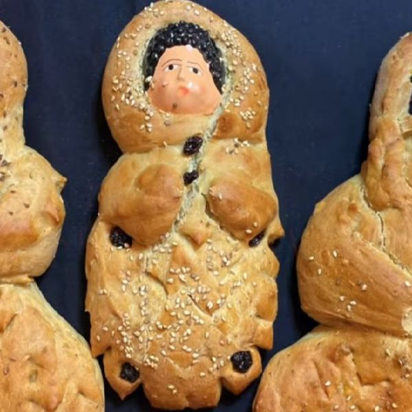

Recetas

SOPA DE MANÍ
La Sopa de Maní, un plato típico boliviano de los domingos. Se trata de una sopa de cacahuate con fideos, carne de res, verduras frescas - adornada con deliciosas papas fritas.
A LA RECETA
SAJTA DE POLLO
La Sajta de Pollo es un plato típico, especialmente en la ciudad de La Paz. En cada ocasión y en cada evento especial, la Sajta se sirve en cada familia.
A LA RECETA
PIQUE MACHO
Pique macho es un plato típico y contundente boliviano de la ciudad de Cochabamba - fácil y rápido de preparar. Las porciones más pequeñas se llaman simplemente Pique.
A LA RECETA
PLATO PACEÑO
El llamado Plato Paceño se prepara tradicionalmente en las fiestas en honor a la ciudad de La Paz el 16 de julio y el 20 de octubre. Quien lo desee, puede añadir un trozo de carne de res.
A LA RECETA
FRICASÉ
Fricasé es un plato típico boliviano - muy popular y en el menú de todos los restaurantes bolivianos.
A LA RECETA
BUÑUELOS
Buñuelos son el acompañante perfecto para el Api boliviano. Un típico snack de desayuno de Bolivia.
A LA RECETA
THIMPU BOLIVIANO
Versión tradicional boliviana de carne de cordero con dos tipos de papas (Chuños y papas saladas). Un plato muy popular para toda la familia en Semana Santa.
A LA RECETA
TANTAWAWAS
Tantawawas: El pan que sirve como conexión entre los vivos y los muertos y que se hornea para el Día de Todos los Santos.
A LA RECETA